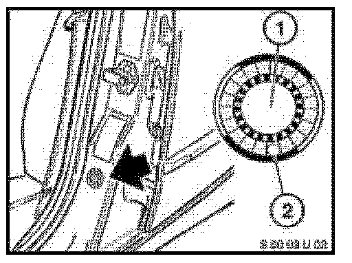
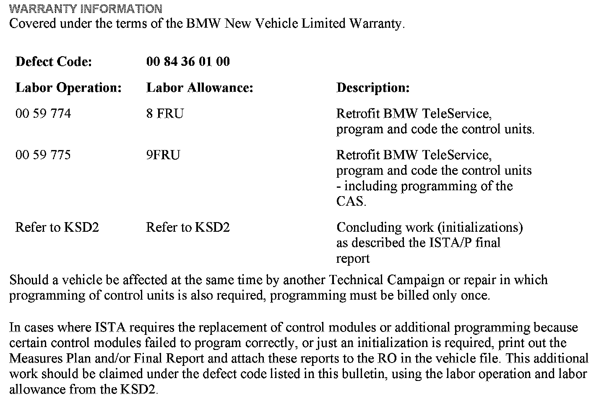
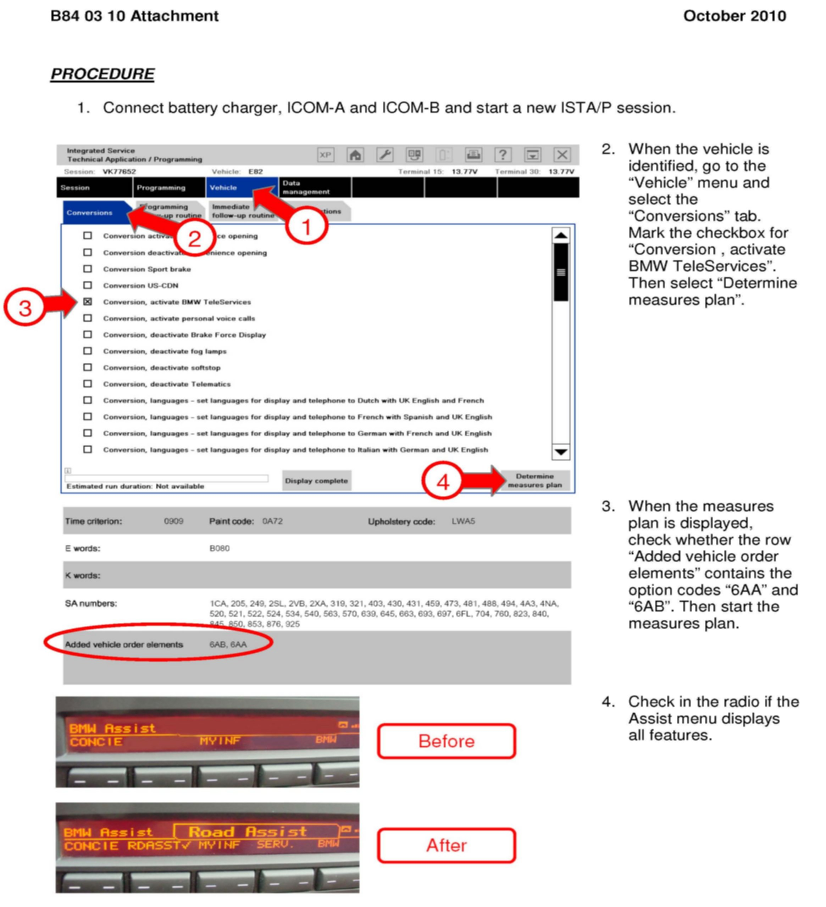

Campaign - Missing BMW Assist(R) Services
SI B84 03 10Communication Systems
November 2010
Technical Service
PERFORM THE PROCEDURE OUTLINED IN THIS SERVICE INFORMATION ON ALL AFFECTED VEHICLES BEFORE CUSTOMER DELIVERY OR THE NEXT TIME THEY ARE IN THE SHOP FOR MAINTENANCE OR REPAIRS.
SUBJECT
Service Action: Missing BMW ASSIST Services
MODEL
E82, E88 (1 Series)
E89 (Z4 Roadster)
E9x (3 Series)
SITUATION
The "BMW TeleService" options (6AA and 6AB) are not in the vehicle order. The following online services are therefore not available in the vehicle:
^ Automatic BMW TeleService call
^ Roadside Assistance call
^ Service call
AFFECTED VEHICLES
This Service Action involves E82, E88 (1 Series), E89 (Z4 Roadster) and E9x (3 Series) vehicles with option 8SC (TeleService), produced between September 1st and September 29th, 2010.
In order to determine whether a specific vehicle has had this Service Action completed or is affected by this Service Action, first check the B-pillar label for code number 582. If code number 582 has been punched out, the campaign has already been performed. If code number 582 has not been punched out, it will be necessary to utilize the "Service Menu" of DCSnet (Dealer Communication System) or the Key Reader. Based on the response of the system, either proceed with the corrective action or take no further action.
CORRECTION
Retrofit the missing TeleService features with ISTA/P 2.39.3 or higher.
PROCEDURE
Follow the procedure in the attachment.
LABEL INSTRUCTIONS
This Service Action has been assigned code number 582. After the vehicle has been checked and/or corrected, obtain a label (SD 92-395) and:
A. Emboss your BMW center warranty number in the middle of the label (1);
B. Punch out code number 582 (2), printed on the label; and

C. Affix the label to the B-pillar as shown.
If the vehicle already has a label from a previous Service Action/Recall Campaign, affix the new label next to the old one. Do not affix one label on top of another one, because a number from an underlying label could appear in the punched-out hole of the new label.

WARRANTY INFORMATION
ATTACHMENTS

B840310_Procedure